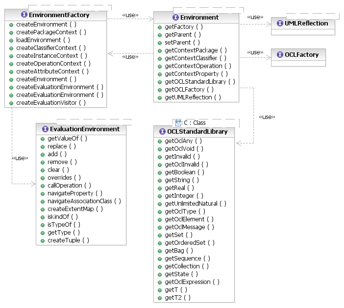
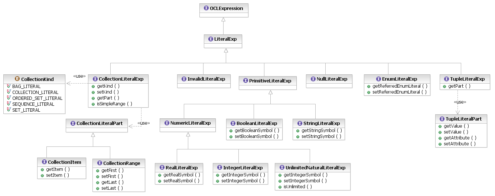

[as SVG]
The MDT OCL component provides a generic specification of the OCL Abstract Syntax Model plus bindings for two popular Eclipse metamodels: Ecore and UML. Users of the OCL API can likewise create bindings for their metamodels, to integrate OCL with their modeling languages.
The Environment interface has a generic type signature with several parameters, representing the metamodeling constructs required by OCL, that it borrows from UML, EMOF, and the other metamodels that it targets. The Javadoc for that interface defines the mappings, and the same type parameter names are used consistently throughout the OCL API.

[as SVG]
To provide a metamodel binding, a client must provide implementations of the following interfaces:
This last item, above, necessitates furthermore that the metamodel binding provide a concrete specialization of the Abstract Syntax Model (in its entirety) that mixes in the target metamodel's correspondents of the UML Classifier and TypedElement metaclasses. The former is required to provide compatibility of the metaclasses in the OCL Types with the target metamodel's type system. The latter is required for compatibility of the metaclasses in the OCL Expressions package with the target metamodel's typed elements.
The following diagram summarizes the metaclasses of the OCL Types package:
[as SVG]
The following diagram summarizes the call expression metaclasses of the OCL Expressions package:
[as SVG]
The following diagram summarizes the literal expression metaclasses of the OCL Expressions package:

[as SVG]
The following diagram summarizes the remaining metaclasses of the OCL Expressions package:
[as SVG]
Copyright (c) 2000, 2007 IBM Corporation and others. All Rights Reserved.